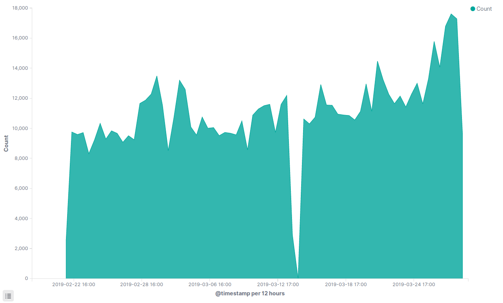

SIEM with Elastic Stack
Objective
• Learn to navigate in the Kibana interface
• Understand how data is stored in Elasticsearch when using it as a SIEM
• Investigate honeypot server traffic logs
• Create visualizations and dashboards to find data trends
1. Learning the Kibana interface
Within Kibana, there are 3 main areas you will want to be familiar with, Discover, Visualize, and Dashboards.
• Discover is the main interface you will use for searching the text of all logs ingested within Kibana
• Visualize is the area to turn logs into various types of charts and graphs
• Dashboard takes the saved searches from the Discover tab and saved visualizations from the Visualize tab, and lets you simultaneously display them all at once in an interactive manner. This view can be great for getting a multi-angle view of your data.
Click on the Discover tab to go to the main interface for log searching:
Before we are able to see logs, we need to do a crash course in the interface.
Date Picker - The Date Picker is one of the most important items in the interface because it tells Kibana which time frame you'd like to search. The first screen you see will not show any logs because by default Kibana will show you logs from the last 15 minutes. Since there is no data streaming in, there's nothing to find.
Index Picker - The Index Picker is the second most important item in the interface, because it tells Kibana which set of logs you want to search through. Elasticsearch stores all logs in various "indexes", think of them as separate databases. By convention, things like firewall logs would go into one index, http logs in another, and flow logs into yet another, etc. In the screenshot the "suricata-flow" index is selected, meaning the default search will show the NetFlow-style logs captured by Suricata.
Field List - The field list tells an analyst the fields that are available in the logs displayed on the screen.
Search Bar - The location to enter your search queries.
For this lab we will use an actual attack data from a research honeypot sitting on the public internet. The setup involved starting a number of fake services on the server and logging all interaction with them using Suricata. Suricata is a tool similar to Snort in that it can use Snort-style IDS signatures to identify suspicious traffic, but it also records metadata like network flow logs, and specifics for transactions in various application layer protocols like HTTP, DNS, TLS, and more. In this Kibana setup, each of these data sources has it's own index that can be selected with the index picker. Clicking on it will reveal the other options.
Keep "suricata-flow" selected (this is layer 3 and 4 NetFlow style data). Next, let's pick a time frame where there is valid data. This honeypot was recording data from 2019-02-19 to 2019-03-29.
To select new dates, copy the date below to the clipboard then follow these instructions:
2019-02-19 00:00:00.000
First click on the date picker where it says "Last 15 Minutes"
Then click again where it says "~15 minutes ago" option at the top:
A new popup will appear:
In this window, select the "Absolute tab" then paste the time from above into the bottom area, this sets the starting bounds of the search.
Once this is done click on the box on the right side of date picker to select ending time for the search:
Use the following time to paste into the box at the bottom.
2019-03-29 12:00:00.000
Your search should now look like this:
If it does, press the "Update" button to run a search with the new start and end time. You should now see the page populated with results:
You now see a populated field list, a histogram of the time of where logs are present in that index's data set, and the time and field details for the logs.
To expand the detail for a log, click the arrow to the left side of the time:
This view shows each individual field from the Suricata flow log parsed out into key-value pairs. Fold the log back up for now.
On the top we can see there is a large list of all the key-value pairs of the log.
It's a bit hard to read and some of it we probably aren't interested in. To filter down logs and only show specific fields, we can mouse over the field list on the left side of the screen. When hovering over any specific item an "add" button will appear that will cause that field to become a dedicated column to display in the main interface. We can also click on the name of any field to expand a drop-down that will show a small statistical analysis of the values in that field (this is not for all logs in that index, just the top 500).
This photo shows what happens when you click on the field called "geoip.city_name". It indicates that most of the flows of the currently displayed logs were sourced from an IP in Macroom a city in Ireland.
Let's add a few columns of interest for flow logs. On the field list, select the "add" button for the following fields in this order.
• source_ip
• source_port
• destination_ip
• destination_port
• application_protocol
• geoip.country_name
• geoip.as_org
You screen should now look like this - much more readable! These fields give us an idea of what type of traffic was seen by the sensor by showing its layer ¾ information and the application layer protocol that was used. It also has some value-added enrichments added by the SIEM - geoIP information about where on earth the traffic came from, and what organization owns that public IP. These fields were not present in the original logs from Suricata and were added after the fact upon log ingestion!

If you've clicked the columns in the wrong order, mousing over their name will expose a small left and right arrow that will let you rearrange them.
If you accidentally click the wrong field, scroll to the top of the field list, all fields currently added as a column move up to the top area under the "Selected Fields" section. You can also hover over the column name in the log list and click the small "x".
Now that we have a good set of columns selected, lets save this view. At the top of the screen select the "Save" link:
Type the name "Flow Logs" and press "Confirm Save"
This set of columns is now saved and will be available to jump back to any time you use the "Open" link next to the Save button.
Before going on the next step, feel free to click around and explore the data in the Discover tab.
2. Create a pie chart visualization of honeypot data
Now that we've seen the data that we're working with, let's start to look at some trends in the honeypot data. Since this is honeypot data from a server sitting quietly on the internet, every interaction with it can be considered a scan or attack attempt (minus the honeypot management traffic, which happened over port 2222).
One basic question you might want to answer is "What port did attackers most commonly attempt to connect to on this server?" Let's use the visualization features to make a pie chart of the data to find the answer.
Click on the visualize tab in Kibana:
This page shows some visualizations that were previously constructed for you, you can come back to these and check them out later if you'd like. We are going to make a new visualization, so click the "+" button to start creating a new visualization:
Kibana will now ask you what type of visualization you'd like to make, select the pie bar chart.
Kibana will then ask which set of data you'd like to use for the chart, select "suricata-flow" as a source.
This will then bring you to a basic pie chart that we can use to start the visualization:
In the default pie chart Kibana will simply count the number of logs in the set of data you have selected, within the time window shown in the date picker in the upper right field. Highlighted in this photo is the Metrics and Buckets section on the left side of the screen. Buckets are how the data is grouped, and Metrics are what is calculated on those groups, this is a VERY important concept for creating visualizations in any SIEM even if your vendor doesn't use these terms, so make sure you understand it. By default, all logs go into one "bucket", and what is calculated is the "Count", which is why we see the chart that we have right now.
This picture shows that within the date's we've selected, there were 774,140 logs total. We want to ask a different question though, we're curious which destination port showed up in the most logs. To answer this question we can leave the Metric on "count", but we need to group (bucket) logs by the "destination_port" field so that we get a count of how many logs exist for each port number. To do this, in the buckets section select "Split Slices":
There are multiple ways to bucket, but we want to bucket our logs based on a log field, or "term" as Kibana calls it. In the Aggregation dropdown select "Terms" (you will have to scroll down to see it, or you can type the word Terms and it will search).
Once selected, new options will appear for selecting the field, ordering, counts, and labeling the output. The first thing we need to do is select the "destination_port" field in the "Field" drop down. Again, typing part of the name is the fastest way to find it in the list of field options.
After selecting "destination_port", change the "Size" to 10 so that we will see the top 10 hits, and add a Custom Label of "Destination Port" as shown below. Once these items are selected, hit the play button at the top of the visualization setup pane.
If your configuration was set correctly, you should now see a new pie chart that gives our answer!
The bucket with the highest number of items in it is at the top of the list on the right of the pie chart, which means port 445 was the most commonly talked to port on the honeypot, followed by port 22 and port 53. Mouse over the slices of the chart and you will see the count for each individual item.

Here we can see port 445 had 295,614 hits in the flow logs. This output is also labeled with the "Destination Port" custom label we defined in the setup (without that setup it would say the field name "destination_port").
Now that we have this information, let's save the setup in Kibana. Select the "Save" button in the upper left corner, name the visualization "Count of Destination Port - Flow".
This type of naming convention gives us an idea of the metric (count) and bucket (destination port) used for the visualization as well as the data source (flows). Congratulations, we've made a visualization in our SIEM! Let's make one more...
3. Create an area chart of attacks by source country
In this section we're going to make an area chart of attacks grouped by the country the traffic came from according to the resolved geoIP information.
While this is not necessarily actionable data or attribution of attacks, it makes for a good demonstration of how to build an area chart visualization and can be used in the final step of the lab.
Click the Visualize breadcrumb at the top of the screen to begin creating a new visualization from scratch.
Select the "+" sign for a new visualization, and this time pick an Area chart.
Select the suricata-flow index as a source of data again as well

You will be taken to a blank bar chart. Again, we must set up how we want to group the data. This setup is a bit more complex than the pie chart because we want to include both a time element, and break the data out by country.
Step 1 will be showing the data over time. It's slightly less intuitive, but what is an area chart/histogram really? Just grouping (bucketing) logs into evenly spaced time-slots over the range of time selected. To do this in Kibana, under the Buckets section, select "X-Axis" then pick "Date Histogram" in the drop down, once selected, hit the play button to see what happens.
We've successfully made a area chart of the total volume of data:

Looking at the x-axis, we can see Kibana has auto-decided to break the data into 12-hour time slots. You can mouse over the chart and see for each data point how many specific logs fell into that time slice. We want to go more specific though and break this into countries, which means we need to make a "sub-bucket", which is a second level of data grouping secondary to the time slots. To do this, go back to the Bucketing section on the left.
Underneath the settings we just entered is a button that says "Add sub-buckets". Click that button and then select "Split Series".
Again we now want to split the data by a field, so pick "Terms", then in the field selection box start typing "country" and select the field "geoip.country_name.keyword" once you see it show up.
Your visualization setup should now look like this - with an X-Axis Date histogram as the top level grouping (bucket) followed by a Split Series bucket using the geoip.country_name.keyword term. If everything is correct, hit the play button to render the new chart.
You should now see the fully rendered area chart split out by countries, with the most common country identified on the top of the list, and at the base of the area chart.
Let's save this chart as well. Select "Save" then name the visualization "Count of Countries Over Time - Flow".
We now have two saved charts, and one saved search. Let's now perform the final step - making an interactive dashboard out of all of them!
4. Make an interactive dashboard
Click on the dashboard icon on the left side of Kibana.

{kind=link}
{kind=link}
{kind=link}
{kind=link}
{kind=link}
{kind=link}
{kind=link}
{kind=link}
{kind=link}
{kind=link}
{kind=link}
{kind=link}
{kind=link}
{kind=link}
{kind=link}
{kind=link}
{kind=link}
{kind=link}
{kind=link}
{kind=link}
{kind=link}
{kind=link}
{kind=link}
{kind=link}
{kind=link}
{kind=link}
{kind=link}
{kind=link}
{kind=link}
{kind=link}
From here, select "Create new dashboard"
{kind=link}
Click the "Add" button in the upper left of the screen to begin adding items to the dashboard
{kind=link}
In the "Add Panels" view you will by default see all the visualizations that have been saved in Kibana. We want to add the two we've just made, so find them in the list and click once each on the two visualizations we've previously saved.
{kind=link}
Once you've clicked on them, switch to the "Saved Search" tab and click on the "Flow Logs" saved search we created earlier as well.
{kind=link}
You now have added all 3 items to the dashboard - 2 visualizations, and 1 saved search. Click the "x" in the Add Panels window to close it and see your dashboard.
{kind=link}
Here it is, all 3 of your saved items now displayed at once.
Once you have the panels how you like, press the "Save" button in the upper left corner. Name the dashboard "My first flow log dashboard", select the "Store time with dashboard" switch so that it locks it to the correct time frame and press "Confirm Save".
{kind=link}
You've now created a interactive dashboard in our SIEM that both groups data on multiple fields and displays the search results simultaneously!
5. Explore Data Using the Dashboard
Let's now do a simple example of how this dashboard can be used to explore your data. On the dashboard, each panel is interactive and can be used to filter the data not just for that panel, but for all other panels at the same time. This is great for threat hunting and data analysis.
For example, let's say we want to investigate all the activity sourced from German IP addresses, we can select Germany in our area chart and apply a filter that will adjust both the pie chart and the search box as well to show only flow logs that match a country name of Germany!
Click on Germany in the list on the area chart, then select the magnifying glass with the "+" symbol to apply the filter.
{kind=link}
You will now see a new filter item appear under the search bar, and all the graphs will be re-rendered to show data that had a country name of Germany only!
Notice the distribution of the most common destination port are now different. In the overall dataset it was port 445, but we can see that isolating our data to Germany only, the most popular destination port of traffic to the honeypot from Germany was actually port 22 (SSH) followed by port 2222 (an alternative SSH port).
Click on the Germany filter term under the search bar and expand it.
{kind=link}
Here we can see the ways we can modify the filter to suit our needs such as inverting it (Exclude results), temporarily disabling it, editing it, or deleting it, which will bring us back to the normal dashboard.
Click "Delete" to go back to the previous view.
{kind=link}
We now have a fully-functional, filterable dashboard we can use to explore your data.
Lab Conclusion
In this lab you used the Elastic Stack as a SIEM to explore NetFlow style log data sourced from a research honeypot. Through selecting interesting columns and visualizations, we were able to create a useful dashboard for exploring the data trends and seeing the underlying patterns within it. No matter which SIEM product you have, this is the type of setup that's very useful for spotting anomalies and other attack trends within your network. All it takes is a bit of data understanding, and the instructions to set it up in your specific SIEM.
All SIEMs are capable of grouping and visualizing data ways similar to what we did here. Therefore the focus of this lab was not "how to do this in Elastic" but rather seeing the process of how to translate questions we have about our data into queries that are grouped by some parameter, and choosing what you would like to calculate on each of those groups. This is an extremely common workflow when it comes to SIEM analysis and one that is crucial to understand.
Throughout this lab, we grouped based on destination IP address, as well as made a histogram (grouping by time slots) followed by sub-grouping based on a source country, to answer our questions about where the traffic to the honeypot was coming from, and what ports it was using. We could have created more complicated charts like grouping based on the source IP, and instead of counting, we could have summed the number of bytes transferred from that IP address, answering the question "Who used the most bandwidth talking to the honeypot?" We also could have used many other types of visualizations to answer further questions including information outside of the flow logs. The trick to effectively using a SIEM is knowing how to translate questions into the search parameters and visualization types that will bring you the answer.
In this lab, we have:
• Used the Elastic stack to search and view logs recorded from Suricata IDS
• Create a saved search with a useful set of columns
• Created visualizations to answer questions about the data using Buckets and Metrics to get used to grouping logs based on various characteristics
• Created a dashboard that lets you explore the NetFlow data in an interactive way